3. Элементы и узлы цифровых устройств
3.1. Общие сведения
3.2. Основы алгебры логики
3.3. Характеристики и параметры цифровых устройств
3.4. Основные логические операции и элементы
3.5. Семейства цифровых интегральных схем
3.6. Сравнение параметров логических элементов основных семейств
3.7. Триггеры
3.Элементы и узлы цифровых устройств
3.1. Общие сведения
Цифровыми называются устройства, в которых обрабатываемая информация имеет
вид электрических сигналов с ограниченным множеством дискретных значений.
В настоящее время в цифровых системах наибольшее распространение получили
цифровые устройства, работающие с двоичным кодированием информации. Электрические
сигналы в таких системах обычно имеют вид прямоугольных импульсов, характеризуемых
двумя значениями уровней, высоким и низким. Элементы, используемые для
обработки цифровых cигналов, называют логическими элементами. Различают
логические элементы, работающие в положительной и отрицательной логиках.
К положительной логике относятся логические элементы, работающие с цифровыми
сигналами, у которых максимальный потенциальный уровень соответствует
логической 1, а минимальный потенциальный уровень логическому 0. К отрицательной
логике относят элементы, у которых максимальный потенциальный уровень
соответствует логическому 0, а минимальный потенциальный уровень - логической
1.
Современные логические элементы и цифровые устройства выполняютcя на основе
интегральных микросхем и обычно используют положительную логику.
Teopетической основой проектирования цифровых систем является алгебра
логики или булева алгебра (по имени ее основоположника Д. Буля). В алгебре
логики переменные величины и функции oт них могут принимать только два
значения 0 и 1 и называются логическими переменными и логическими функциями.
Устройства, реализующие логические функции, называются логическими, или
цифровыми.
Цифровые устройства имеют принципиальные схемотехнические отличия от аналоговых
ycтройств, обусловленные следующими факторами: менее жесткими требованиями
к точности, стабильности параметров и характеристик элементов; возможностью
синтеза систем любой сложности с помощью ограниченного набора базовых
логических элементов и элементов памяти; возможностью сопряжения функциональных
узлов без специальных согласующих элементов (благодаря использованию гальванической
связи между функциональными узлами); простотой расширения функциональных
возможностей путем набора требуемых сочетаний интегральных микросхем.
Различают два основных класса цифровых устройств; комби- национные и последовательностные
автоматы. В комбинационных автоматах определенному сочетанию входных сигналов
(набору) соответствует определенный выходной сигал. Они, как правило,
не обладают памятью. В последовательностных автоматах такая однозначность
отсутствует. В них выходной сигнал зависит от сово- купности входных сигналов
как в текущий, так и в предыдущие моменты времени. Эти автоматы обладают
памятью. В комбинационнных автоматах наиболее широкое применение находят
такие цифровые устройства, как сумматоры, дешифраторы и преобразователе
кодов. В последовательностных автоматах широко используются цифровые устройства
с двумя устойчивыми состояниями— триггеры. На их основе строят регистры,
счетчики, схемы памяти.
3.2. Основы алгебры логики
В алгебре логике различные логические выражения могут иметь только два значения: «истинно» или «ложно». Для обозначения истинности или ложности пользуются символами 1 и 0.
В алгебре логики используются функции вида Y=f(X1, Х2, ..., Хn), где сама функция и ее аргументы могут принимать лишь два дискретных значения 1 и 0. Если имеется n аргументов (логических переменных), то они образуют 2n возможных логических наборов из 1 и 0. Для каждого набора переменных логическая функция Y может принимать значение 0 или 1. Поэтому для n переменных можно образовать N=22n различных функций. Например, при n= 1 получим четыре булевых функции: f0(X) = 0 — постоянный 0; f1(Х) = Х — тождественность X; f2(Х)=Х —инверсия X; f3(X)= 1 — тождественность 1.
Все возможные логические функции n переменных можно образовать с помощью треx основных операций; логического отрицания (инверсии, операции НЕ), логического сложения (дизъюнкции, операции ИЛИ), логического умножения (конъюнкции, операции И).
Ниже приведены математические записи основных аксиом и законов булевой алгебры. Применение данных аксиом и законов позволяет производить упрощение логических функций. Логические функции могут иметь различные формы представления: словесное, табличное, алгебраическое, графическое. Наиболее широко используют представление функций в виде таблиц истнинности. Таблица истинности содержит все возможные наборы значений логических переменных и значения функций, соответствующих каждому из наборов.
Aксиомы: Законы:
1+х=1 х1+х2=х2+х1
0·х=0 х1·х2=х2·х1
0+х=х х1+х2+х3=(х2+х3)+ х1
1·х=х х1·х2·х3=(х2·х3)· х1
х+х=х х1·(х2+х3)=(х2·х1)+(х1·х3)
х·х=х х1+(х2·х3)=(х2+х1)·(х1+х3)
х+
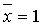
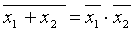
х·
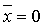
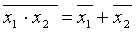
=х х1+х1·х2= х1
х1·(х1+х2)= х1
Как было уже указано, любую логическую функцию можно представить с помощью соответствующей комбинации простейших логических функций И, ИЛИ, НЕ. Поэтому такой набор называют логическим базисом или функционально полным.
Используя законы булевой алгебры, нетрудно доказать, что функционально полными наборами также являются логические функции И, НЕ, ИЛИ, а также наборы из одной функции И-НЕ, ИЛИ-НЕ. Функциональная полнота этих наборов следует из того, что с их помощью можно реализовать все другие функции логических базисов.
Ниже
рассматриваются электронные схемы, выполняющие простейшие логические
операции. Для реализации цифровых систем любой сложности достаточно
иметь набор логических элементов, реализующих операции хотя бы одного
из функционально полных наборов. Этот набор элементов называют минимальной
базой. В современной микроэлектронике такой базой являются элементы
либо И-НЕ, либо ИЛИ-НЕ, выполняемые по различным технологиям на основе
биполярных и полевых транзисторных структур.
3.3. Характеристики и параметры цифровых устройств
Основными параметрами логических элементов и цифровых устройств являются функциональные, статические, динамические и технико-экономические.
Функциональные параметры определяют логические возможности узла или устройства. К ним относятся: Краз—коэффициент разветвления по выходу (нагрузочная способность), характеризующий максимальное число однотипны логических элементов, которые можно одновременно подключить к выходу устройства и Коб—коэффициент объединения по входу, определяющий максимальное число логических элементов, которые можно подключить к устройству.
К
статическим параметрам относят входные и выходные токи и напряжения,
соответствующие логическим 1 и 0; токи потребления в двух состояниях;
мощности, потребляемые схемой в состояниях 0 и 1. Средняя потребляемая
мощность определяется по формуле 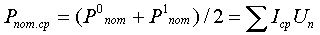
где Р0пот—мощность, потребляемая устройством в состоянии 0; Р1пот—мощность, потребляемая устройством в состоянии 1; Iср—средний ток, потребляемый одним элементом устройства. Помехоустойчивость характеризуется допустимым напряжением статической помехи Uпом, при подаче которого на вход цифрового устройства не наблюдается его ложного срабатывания.
К динамическим параметрам относятся: t01 -время перехода из состояния логического 0 в состояние логической 1; t10 — время перехода из состояния логической 1 в состояние логического 0; tз.ср — среднее время задержи; tз.ср=(t01+ t10)/2. Параметр tз.ср характеризует среднее время выполнения логических операций, т.е. быстродействие устройства.
При сравнении цифровых устройств часто пользуются параметром, называемым работой переключения: Ап=Рпот.срtз.ср. Совершенствование технологии цифровых интегральных схем (ЦИС) сопровождается непрерывным снижением Ап цифровых устройств.
С ростом частоты переключения у многих цифровых устройств наблюдается увеличение потребляемого тока. Для учета этого явления используют дополнительный параметр—динамическую мощность Рд при максимальной частоте переключения fп max: Рд=Снfmax(U1-U0), где Сн -емкость нагрузки. Максимальная частота переключения обратно пропорциональна среднему времени задержки: fп max»4/tз.ср.
К технико-экономическим параметрам относятся: стоимость, степень интеграции, объемно-габаритные показатели, функциональная сложность, надежность. Основными характеристиками цифровых устройств являйся: входная iвх=f(Uвх); выходная iвых=f(Uвых) и передаточная Uвых=f(Uвх). На практике наиболее широко используется передаточная характеристика.
Передаточной характеристикой называется зависимость напряжения на выходе oт напряжения на одном из входов при постоянных значениях напряжения (U0 и U1) на остальных входах. По типу передаточных характеристик цифровые устройства делятся на инвертирующие и неинвертирующие. Случай, показанный на рис. 3.1, а, соответствует инвертирующему устройству.
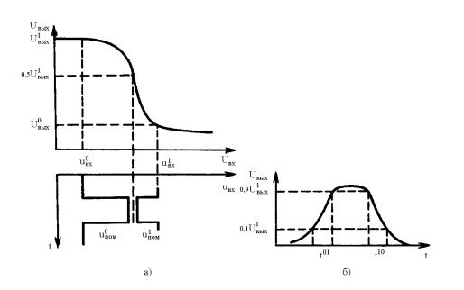
Рисунок 3.1.
С помощью передаточной характеристики можно определить допустимое напряжение статической помехи по низкому U0пом и высокому U1пом уровням, указанные на рис.3.1,а.
Динамические параметры цифровых устройств удобно определять по временным диаграммам. Вследствие наличия в цифровом устройстве реактивных элементов (в частности, междуэлектронных емкостей транзисторов и емкости нагрузки) форма выходного сигнала всегда отличается от идеальной (формы прямоугольного импульса) и может иметь вид, показанный на рис. 3.1,б.
По форме выходного импульса определяют время включения t01, время выключения t10 и среднее время задержки tз.ср.
3.4. Основные логические операции и элементы
Основными логическими операциями являются операции инверсии (НЕ), сложения (ИЛИ), умножения (И), а также операции ИЛИ-НЕ и И-НЕ. Простейшие схемотехнические реализации этих операций приведены в табл. 3.1. Здесь же указаны условные буквенные и графические обозначения и соответствующие им таблицы истинности.
Базовыми элементами любого логического устройства являются цифровые ключи на основе БТ и ПТ, особенности выполнения и работа которых рассмотрены в гл. 1.
Ключ, выполненный на БТ, включенном по схеме с общим эмиттером, либо на ПТ, включенном по схеме с общим истоком реализует операцию НЕ. Действительно, если на входе транзистора низкий уровень напряжения U0вх, то он закрыт и имеет высокое выходное сопротивление Rвых. Напряжение питаний распределяется между сопротивлением нагрузки Rн и выходным сопротивлением транзистора. Так как в этом случае Rвых>> Rн, то практически все напряжение источника питания выделяется на выходе транзистора (Uвых=U1вх»Uп). И наоборот, если на входе транзистора высокий уровень напряжения U1вх, транзистор открывается, при этом Rвых<< Rн и на выходе устанавливается низкий уровень напряжения U0вых.
В схеме, реализующей операцию ИЛИ, высокий уровень напряжения на выходе появляется, если аналогичный уровень имеется хотя бы на одном из входов. Для этого транзисторы включаются по схемам повторителей напряжения. Нагрузка включается в цепь эмиттера, а выходные цели транзисторов включаются параллельно. Если в такой схеме включить нагрузку в цепь коллекторов и снимать выходное напряжение с коллекторов, то элемент будет реализовывать операцию ИЛИ-НЕ.
В схеме, осуществляющей операцию И, высокий уровень напряжения на выходе появляется лишь в случае аналогичных уровней на всех входах элемента. Для этого выходные цепи транзисторов соединяют последовательно, а выходное напряжение снимают с сопротивления нагрузки в цепи эмиттера. Если в таком элементе включить нагрузку в цепь коллектора верхнего транзистора (как показано в табл. 3.1) и снимать с него выходное напряжение, то реализуется операция И-НЕ.
Таблица 3.1.
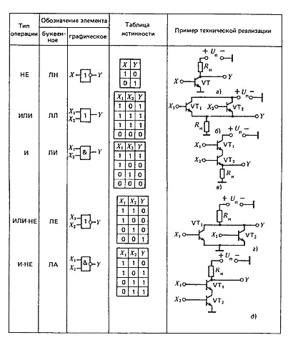
3.5. Семейства цифровых интегральных миксросхем
В зависимости от типа применяемых элементов и особенностей схемотехники различают следующие семейства ЦИС: ТЛНС— транзисторные логические ИС с непосредственной (гальванической) связью; РТЛ — резисторно-транзисторные логические ИС; PЕТЛ резисторно-емкостные логические ИС; ДТЛ —диодно-транзисторные логические ИС; ТТЛ — транзисторно-транзисторные логические ИС; И2Л—интегральные инжекционные логические схемы; ЭСЛ—эмиттерно-связанные логические ИС; МДП —логические схемы на основе МДП транзисторов; КМДП — логические схемы на основе комплементарных МДП транзисторов. Чтобы правильно выбрать тип ЦИС, необходимо представлять внутреннюю структуру базовых логических элементов, знать функциональные возможности и основные параметры логических элементов разных семейств.
Исторически первым было семейство ЦИС типа ТЛНС. Базовые элементы имеют технические решения, приведенные в табл. 3.1. Следует учитывать, что нагрузками логических элементов являются входные цепи аналогичных элементов. Серьезный недостаток ТЛНС- неравномерное распределение тока между базами нагрузочных транзисторов. Такая неравномерность связана с различием входных характеристик транзисторов, обусловленным не технологическим разбросом (который в ИС мал), а неизбежным различием коллекторных токов насыщенных транзисторов. Токи насыщения существенно зависят от числа транзисторов базового элемента, находящихся в открытом состоянии. При подключении нескольких нагрузок к базовому элементу снижается логический перепад выходных уровней и, следовательно, допустимое значение статических помех (до значения Uпом»0,2 В).
В семействе РТЛ используются технические решения, аналогичные ТЛНС, но для выравнивания входных характеристик транзисторов в цепях баз включены резисторы с сопротивлениями несколько сот Ом. При этом возросли уровень логической 1, логический перепад уровней и допустимое напряжение статической помехи, но снизилось быстродействие. Сопротивления в цепи базы и входные емкости oбразуют цепочки, из-за которых возрастает длительность фронта выходного импульса.
Для того чтобы избежать указанного недостатка в семействе РЕТЛ, явившемся развитием РТЛ, резисторы в цепях базы шунтированы конденсаторами небольшой емкости. В момент переключения предыдущего элемента эти конденсаторы на некоторое время шунтируют резисторы и обеспечивают повышенные значения базовых токов, тем самым снижая длительность фронта.
В ИС резисторы и особенно конденсаторы занимают большую плошать. Поэтому элементы семейства РТЛ и РЕТЛ оказались неперспективными и в настоящее время используются редко. Семейство ТЛНС явилось прототипом весьма перспективного варианта логических элементов семейства И2Л, рассматриваемого ниже.
В базовых элементах семейства ДТЛ отказались от резисторов и конденсаторов в цепях без транзисторов и используют вместо них диоды.
Базовый элемент семейства ДТЛ, выполняющий операцию И-НЕ, приведен на рис. 3.2,а.
В элементе ДТЛ базовый ток выходного транзистора, выполняющего функции инвертора, проходит через резистор R1, диоды VD1 и VD4 только тогда, когда закрыты оба входных диода VD1 и VD2, т. е. если все входные напряжения имеют высокий уровень (U1вх1, U1вх2). В этом случае транзистор VT открыт и на выходе имеется низкий уровень U0вых.
Базовый ток, протекающий через диоды VD3, VD4, вызывает на них падение напряжении около 1,2 В. Вместе с напряжением на базе открытого транзистора это составит U=1,2 + 0,6=1,8 В. Если входное напряжение не превышает 1,2 В, соответствующий входной диод открывается, а напряжение U3 снижается. Следовательно, диоды VD3, VD4, а вместе с ними и транзистор VT закрываются.
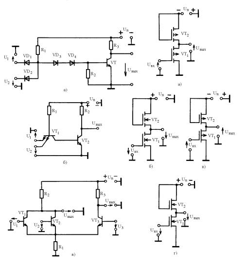
Рисунок 3.2
Введение в схему диодов VD3, VD4 способствует увеличению перепада логических уровней и помехоустойчивости элемента (Uпом»0,5 В). Для того чтобы работа диодов VD3, VD4 не зависала oт состояния транзистора VT, в схеме предусмотрено сопротивление R2.
В семействе ТТЛ удалось избежать основного недостатка элементов ДТЛ—большого количества диодов. В базовом элементе семейства ТТЛ (рис. 3.2, б) функции диодов выполняет входной многоэмиттерный транзистор VТ1.
Если все входные напряжения имеют высокий уровень, ток, протекающий через резистор R1 по открытому в прямом направлении переходу «база—коллектор» входного транзистора VT1, течет в базу транзистора VT2 и приводит его в открытое состояние. В этом случае на выходе транзистора VT2 будет низкий уровень U0вых. Если хотя бы на один из входов подано низкое напряжение, то соответствующий переход «база — эмиттер» открывается и отбирает базовый ток транзистора VT2. Транзистор VТ2 закрывается, и выходное напряжение принимает значение, соответствующее высокому уровню (U1вых). Таким образом, элемент выполняет операцию И-НЕ.
Базовый элемент семейства ТТЛ занимает существенно меньшую площадь по сравнению с элементом семейства ДТЛ, сохраняя его достоинства. Поэтому схемы ТТЛ в настоящее время практически вытеснили схемы ДТЛ и получили очень широкое pacпpостранение.
Для увеличения нагрузочной способности и повышения помехоустойчивости в ТТЛ схемах вместо простого инвертора на одном транзисторе часто используют специальные каскады усиления мощности на двух-трех транзисторах.
Для повышения быстродействия между базой и коллектором VТ2 включают диод Шотки. Как известно, максимальная частота переключения транзистора ограничивается в основном временем рассасывания накопленных зарядов. Для повышения максимальной частоты переключения необходимо предотвратить насыщение транзистора и этим исключить накопление заряда. Включение диода Шотки параллельно переходу «база —коллектор» транзистора приводит к возникновению ООС по напряжению и препятствует снижению напряжения между коллектором и эмиттером ниже 0,3 В.
Элементы транзисторной логики с диодами Шотки получили название ТТЛШ. Они имеют примерно в 3 раза меньшее среднее время задержки сигналов.
Базовый элемент семейства ЭСЛ имеет упрощенную схему, приведенную на рис. 3.2,в. Как видно из схемы, транзисторы VT1, VT2 и VT3 образуют дифференциальный усилитель, который может использоваться в качестве переключателя токов основных транзисторов VT1 либо VT2 и вспомогательного транзистора VТ3. Причем для переключения токов достаточна небольшая разность входных напряжений (примерно ±100 мВ). Нагрузочные сопротивления R2 и R3 выбирают низкоомными, чтобы предотвратить насыщение открытого транзистора.
Рассмотрим принцип работы базового элемента семейства ЭСЛ. На базу вспомогательного транзистора VТ3 подается постоянное опорное напряжение U°вх < Uоп < U1вх. Если все входные напряжения имеют низкий уровень (U1=U0вх, U2 = U0вх), транзисторы VТ1 и VT2 закрыты. В этом случае эмиттерный ток транзистора VТ3, протекая через резистор R1, вызывает на нем падение напряжения, являющееся для транзисторов VТ1 и VТ2 запирающим. Поэтому на первом выходе будет высокий уровень напряжения Uвых1 = U1вых, а на втором выходе—низкий Uвых2 = U0вых.
Если хотя бы на одном из входов напряжение будет иметь высокий уровень, то на сопротивлении R1 возрастет напряжение и транзистор VТ3 окажется в закрытом состоянии. При этом напряжение на первом выходе уменьшится (Uвых1 = U0вых), а на втором выходе увеличится (Uвых2 = U1вых). Таким образом, элемент может выполнять операции ИЛИ (при снятии выходного сигнала со второго выхода) либо ИЛИ-НЕ (при снятии выходного сигнала с первого выхода).
Базовые элементы семейства ЭСЛ потребляют значительную мощность от источника питания, однако обеспечивают наименьшее время переключения по сравнению с другими типами логических элементов. Среднее время задержки для элементов семейства ЭСЛ лежит в пределах десятых долей или единиц наносекунды. Несмотря на малый перепад логических уровней, элементы семейства ЭСЛ обладают удовлетворительной помехоустойчивостью. Импульсные помехи в цепях питания незначительны, так как потребление тока в схеме не изменяется при переключении ее элементов.
В реальных схемах на выходах логических элементов семейства ЭСЛ используют усилители мощности на основе эмиттерных повторителей, что улучшает их нагрузочную способность,
Семейство МДП содержит несколько типов базовых элементов на основе транзисторов: с индуцированным каналом р-типа, с индуцированным каналом n-типа, со встроенным каналом р-типа, со встроенным каналом n-типа. Схемы простейших базовые элементов названных типов, реализующих операцию НЕ, приведены на рис. 3.3. Здесь транзисторы VT1 выполняют функцию ключа, а транзисторы VT2 —функции нелинейных резисторов нагрузки. Использование транзисторов VТ2 в качестве нагрузочных элементов позволяет отказаться от создания высокоомных резисторов, что при интегральном исполнении дает возможность повышать плотность компоновки и создавать все элементы в едином технологическом цикле. Для поддержания транзисторов VТ2 в открытом состоянии их затворы соединяют с источником питания, как показано на рис. 3.3. Транзисторы VТ1 в схемах на рис. 3.2, а, б имеют индуцированные каналы и, следовательно, при отсутствии входного сигнала (Uвх=U0вх) закрыты. При этом на выходе напряжение соответствует логической 1 (Uвых = U1вых). Следует помнить, что р-канальные элементы работают в режиме отрицательной логики, n-канальные — в режиме положительной логики.
При подаче на входы отпирающего напряжения (Uвх=U1вх) транзисторы VТ1 открываются и на выходе напряжение принимает значение, соответствующее логическому 0 (Uвых = U0вых).
Таким образом, элементы выполняют функции инверторов и реализуют операцию НЕ. Аналогичным образом работают инверторы на основе транзисторов со встроенными каналами (рис. 3.3, в, г). Однако управлять такими транзисторами сложнее. Это объясняется тем, что в нормальном состоянии (при Uвх= 0) через транзисторы протекает некоторый ток. При этом Uвых = Uп за счет падения напряжения на транзисторах VТ1. Для надежного закрытия транзисторов VT1 требуется исходное напряжение смещения с полярностью, отличной от напряжения Uп

Рисунок 3.4
Логические элементы на основе МДП транзисторов имеют ряд особенностей:
1. Входные цепи практически не потребляют тока и, следовательно, не нагружают предшествующие элементы аналогичного типа. Таким образом, МДП логические элементы могут иметь очень большие значения коэффициентов разветвления по выходу. Его верхнее значение в основном определяется требуемым временем переключения, так как с ростом числа нагрузок пропорционально возрастет емкость нагрузки.
Несмотря
на использование гальванической связи МДП,
логические элементы функционируют независимо друг от друга. В
частности, логические уровни U0вых и U1вых не зависят от числа
подключенных входов следующих элементов.
Напряжение
питания выбирают в 3 ... 4 раза больше
порогового напряжения МДП транзисторов. Поэтому перспективными
являются разработки с использованием низкопороговых
МДП транзисторов (Uзи пор»1
В). Это позволяет синтезировать логические элементы семейства
МДП, совместимые по уровням с другими семействами, в частности
с ТТЛ. При этом МДП логические элементы обладают повышенной
помехоустойчивостью (Uпом = 1
... 2В).Элементы
семейства МДП обладают невысоким быстро действием. Быстродействие
ограничивается скоростью перезаряда емкости нагрузки. Для повышения
быстродействия необходимо увеличивать рабочие токи. Это
возможно путем увеличения ширины каналов и, следовательно,
площади, занимаемой транзисторами. Увеличение рабочих токов
связано с увеличением потребляемой мощности. Таким образом,
повышение быстро действия логических МДП схем связано с неизбежным
уменьшением степени интеграции.
Исторически первыми стали широко использоваться логические элементы на основе р-канальных транзисторов с индуцированными каналами, имеющие простую технологию изготовления (рис. 3.3, а). Затем были разработаны n-канальные логические элементы, обладающие повышенным быстродействием.
В настоящее время очень широко применяются логические элементы, использующие МДП транзисторы с разными типами проводимости каналов. Они выделились в самостоятельное семейство, получившее название комплементарной МДП логики (КМДП). Базовые технические решения семейства КМДП приведены на рис. 3.4.
Недостатком инверторов семейства МДП (рис. 3,3) является нахождение нагрузочных транзисторов (VТ2) в открытом состоянии, независимо от состояния ключевых транзисторов (VТ1). Существенно лучшими показателями обладает инвертор КМДП логики (рис. 3.4, а), у которого нагрузочный транзистор VT2 включается и выключается в противофазе с транзистором VТ1. Для упрощения схемы управления удобно использовать транзисторы VТ1 и VТ2 с разными типами проводимости каналов. Это позволяет соединить их затворы между собой и управлять однополярными импульсами. Рассмотрим принцип действия инвертора.
Если на входе низкий уровень напряжения Uвх=U0вх, то открыт р-канальный транзистор VТ2, а n-канальный VT1 закрыт. Выходное напряжение соответствует логической 1 (Uвых=U1вых<»Uп). Причем это напряжение поддерживает транзистор VT2 в открытом состоянии. Если на входе появляется высокий уровень напряжения (Uвх=U1вх»Uп), то транзистор VТ1 открывается, а VТ2 закрывается. Выходное напряжение близко к нулю (Uвых=U0вых<»0)
Современные КМДП элементы допускают работу с напряжениями питания, изменяющимися в широких пределах (3 ... 15 В).
Очевидно, что в статическом режиме потребление тока данным элементом равно нулю. Лишь в момент переключения потребляется ток, определяемый в основном процессами перезаряда емкости нагрузки. Мощность, потребляемая элементом, растет пропорционально частоте переключения.
При напряжении Uп = 5 В элементы КМДП обладают совместимостью с элементами ТТЛ логики, превосходя последние по помехоустойчивости(Uпом<»Uп/3).
На рис. 3.4,б изображен логический элемент ИЛИ-НЕ, работающий на том же принципе, что и рассмотренный КМДП инвертор.
Для того чтобы всегда можно было обеспечить большое управляемое сопротивление нагрузки, когда любое из входных напряжений будет иметь высокий уровень, соответствующее число канальных транзисторов включается последовательно. Несмотря на то, что при этом выходное сопротивление элемента в состоянии логической 1 возрастает, выходное напряжение логической 1 остается близким к напряжению источника питания Uп, так как в стационарном режиме ток не течет. Если нагрузочные транзисторы по выходу соединить параллельно, а каналы входных транзисторов соединить последовательно, то получится логический элемент, выполняющий операцию И-НЕ, представленный на рис. 3.4, в.
Как известно, МДП транзисторы чувствительны к наведенным электростатическим нарядам. Чтобы избежать пробоя МДП транзисторов, в современных ИС предусматривается встроенная защита с помощью диодов.
Логические элементы семейства И2Л появились позднее других и очень перспективны для интегрального исполнения. По существу, они являются модификацией схем ТЛНС, у которых вместо базовых и нагрузочных сопротивлений используются инжекторы: транзисторы в роли генераторов тока. Для реализации операции И па входе элемента И2Л включают диоды Шотки. Базовый элемент семейства И2Л, выполняющий операцию И-НЕ, показан на рис. 3.5. Как видно, базовый элемент семейства И2Л очень похож на элемент семейства ДТЛ, у которого на входе обычные диоды заменены диодами Шотки. Особенностью элементов семейства И2Л является широкое использование многоколлекторных транзисторов.
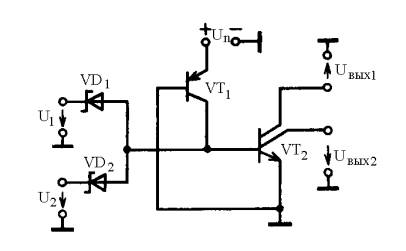
Рисунок 3.5
Принцип действия элемента И2Л аналогичен принципу действия элемента ДТЛ. Здесь базовый ток выходного транзистора VT2 обеспечивается выходной цепью р-n-р транзистора (VТ1), работающего в режиме генератора постоянного тока. Такая комбинация р-n-р и n-р-n транзисторов, реализуемая с помощью специального технологического процесса, занимает на кристалле очень малую площадь.
Ток, инжектируемый транзистором VT1, может меняться в широких пределах применительно к различным потребностям. Чем больше его величина, тем меньше среднее время задержки.
3.6. Сравнение параметров логических элементов основных семейств
Для рационального выбора элементной базы при проектировании цифровой аппаратуры можно воспользоваться сравнением параметров однотипных базовых элементов разных семейств. В табл. 3.2 сведены параметры типовых базовых логических элементов с двумя входами для разных семейств.
Таблица 3.2
| Тип элемента |
Напряже-ние питания |
Средняя потребляе- мость, Р, мВт |
Среднее время задержки tЗ.СР, нс |
Работа переключе- ния АП, пДЖ |
Нагрузочная способность К раз |
| РТЛ |
3 |
5 |
25 |
125 |
4 |
| ДТЛ |
5 |
9 |
25 |
225 |
7 |
| ТТЛ |
5 |
10 |
10 |
100 |
10 |
| ТТЛШ |
5 |
2 |
10 |
20 |
10 |
| ЭСЛ |
5 |
40 |
0,75 |
30 |
10 |
| p-МДП |
+4, -12 |
0,5 |
100 |
50 |
20 |
| n-МДП |
+12, ±5 |
0,5 |
30 |
15 |
20 |
| КМДП |
+3 до 15 |
(0,2…0,3)*103 |
90…30 |
0,05 |
50 |
| И2Л |
1 |
(1…10)*103 |
1000…10 |
1 |
3 |
Из таблицы видно, что наименьшее время задержки имеют элементы с малым перепадом логических уровней и повышенным энергопотреблением. Комплексным показателем качества элемента является работа переключения АП = РПОТ.СРtЗ.СР. Сравнение логических элементов по этому показателю позволяет сделать вывод, что наиболее перспективными семействами логических элементов являются И2Л и КМДП. Показатели средней мощности и работы переключения для КМДП логических элементов соответствуют частоте переключения fП = 1 кГц.
3.7. Триггеры
Общие сведения. Помимо логических элементов, реализующих основные логические операции, в цифровой технике широко используются в качестве базовых элементов ячейки памяти на основе разнообразных триггеров. Обобщенная модель триггера показана на рис. 3.6. Очевидно, любой триггер состоит из схемы управления (СУ) и бистабильной ячейки памяти (ЯП). Триггеры имеют входы управляющих сигналов Х1, Х2,…Хn два взаимоинверсных выхода Q и , а также могут иметь вход синхронизации С.
В общем случае к триггерам относят устройства, имеющие два устойчивых состояния, которые устанавливаются при подаче соответствующей комбинации сигналов на управляющие входы и
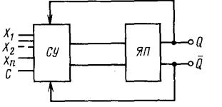
Рисунок 3.6
сохраняются в течение заданного времени после окончания действия этих сигналов. Триггеры способны хранить двоичную информацию (состояния «О» и «1») после окончания действия входных импульсов. Это свойство обусловлено тем, что устройством управляют не только внешние сигналы, но и сигналы обратной связи самого триггера.
По функциональному признаку, определяющему поведение триггера при воздействии сигнала управления и способа управления, триггеры подразделяют на следующие типы:
RS-триггеры, имеющие два управляющих входа: S (set— установка) и R (reset—сброс); D-триггеры (D—delay—задержка), имеющие один информационный вход;
Т—триггеры (T—time—время, характеризующее внутреннюю задержку), переключающиеся в противоположное состояние с приходом каждого очередного входного импульса.
Часто Т-триггеры называют триггерами со счетным запуском. Иногда Т-триггеры обозначают MS. Это отражает то, что каждый из них состоит из двух RS-триггеров, один из которых является основным (М—master—хозяин), а другой—вспомогательный (S—slave—раб);
JK—универсальные триггеры, имеющие управляющие входы J (J—-jump—прыжок, переброс) и К (keep—держать, сохранять) и допускающие установку выходных уровней при наличии сигнала на входе синхронизации С.
По способу управления триггеры подразделяют на асинхронные и тактируемые. В асинхронных триггерах переключение из одного состояния в другое осуществляется непосредственно с поступлением сигнала на информационный вход. В тактируемых триггерах переключение производится только при наличии разрешающего, тактирующего импульса на входе синхронизации.
В зависимости от типа используемых ячеек памяти триггеры подразделяются на статические, статико-динамические и динамические. Первые два типа реализуются на основе логических элементов НЕ, ИЛИ-
НЕ, И-НЕ, а последний на основе МДП транзисторов.
В зависимости от типа базовых логических элементов реализуются триггеры с различными параметрами: быстродействием, потребляемой мощностью, нагрузочной способностью и др.
RS-триггер. Простейшим триггером является асинхронный RS-триггер. Такой триггер нетрудно реализовать на основе двух логических элементов ИЛИ-НЕ (рис. 3.7, а) или И-НЕ (рис. 3.7, в).
Как видно из рассмотрения принципиальных схем, основу триггеров составляют два инвертора, связанные между собой взаимными перекрестными связями. Эти связи обусловливают в процессе переключения возникновение положительной обратной связи, способствующей повышению быстродействия и надежности работы схемы.
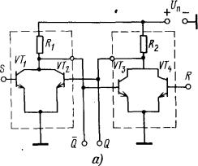
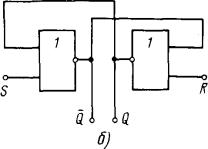
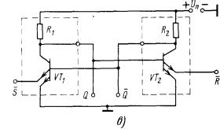
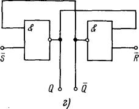
Рисунок 3.7.
При наличии логической 1 на выходе одного инвертора на выходе другого поддерживается логический 0. Необходимые уровни напряжения на выходе издаются схемой управления, которая при использовании логических элементов семейства ТЛНС (см. рис. 3.7, а) образована транзисторами VT1 и VT2, а при использовании элементов семейства ТТЛ (см. рис. 3.7, в) образована эмиттерными переходами транзисторов VT1 и VT2. Триггеры, реализованные на основе логических элементов ИЛИ-НЕ, работают в положительной логике, а реализованные на основе логических элементов И-НЕ работают в отрицательной логике. Для работы в положительной логике схема управления последних усложняется добавлением двух инверторов.
Уровни
напряжений на обоих выходах триггера различны и одновременно
изменяются на противоположные при работе устройства управления.
Поэтому на условном обозначении триггера (см. рис. 3.7, б,
г) один из выходов обозначен Q, а второй—через
 (факт инверсии
отражается кружком на стороне прямоугольника). Выход Q
считается главным: значениями Q характеризуют состояние
триггера в целом.
(факт инверсии
отражается кружком на стороне прямоугольника). Выход Q
считается главным: значениями Q характеризуют состояние
триггера в целом.
Уравнение
состояний RS-триггера
имеет вид 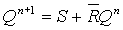
если
S = 0, R = 0, то 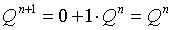
если
S = 0, R = 1, то 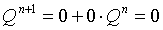
если
S = 1, R = 0, то 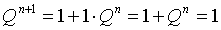
если S = 1 и R = 1, то триггер находится в неопределенном состоянии Х, (т.е. с равной вероятностью может находиться в любом из устойчивых состояний Q = 1 или Q = 0), поэтому такой набор является запрещенным: нельзя одновременно подавать на триггер противоположные команды S (установить 1) и R (установить 0).
Интегральные триггеры. Наряду с простыми логическими элементами в состав серий ЦИС входят триггеры различных типов и устройства на их основе: регистры, счетчики, сумматоры и др. Данные об основных типах интегральных триггеров сведены в табл. 3.3.
Наибольшей универсальностью среди триггеров обладает JK-триггер Он работает как RS-триггер, причем в отличие от RS-триггеров здесь допустимо, чтобы оба управляющих сигнала были равны 1.
Если управляющие сигналы J и К равны 1, то JK-триггер работает как T-триггер. При подаче на вход С синхронизирующего импульса триггер будет работать в режиме делителя на 2. Этот режим используется при построении последовательных счетчиков и делителей частоты любой сложности.
Если на информационные входы J и К подавать противофазные логические сигналы, то триггер будет работать в режиме синхронной записи информации. При подаче тактового импульса на вход С эта информация появляется на выходе, т. е. сдвигается в следующую ячейку Такой режим используется при построении сдвигающих регистров, распределителей импульсов, синхронных.
Интегральные JK-триггеры часто имеют несколько управляющих J, К входов, что расширяет его функциональные возможности и позволяет экономить внешние логические элементы. С помощью указанных входов триггер можно установить в определенное состояние независимо от тактового импульса. Поэтому эти входы получили названия предустановки и стирания.
Квазистатические и динамические триггеры. В квазистатических и динамических триггерах используют свойство МДП транзистора сохранять заряд на паразитной емкости затвора в течение определенного времени.
Таблица 3
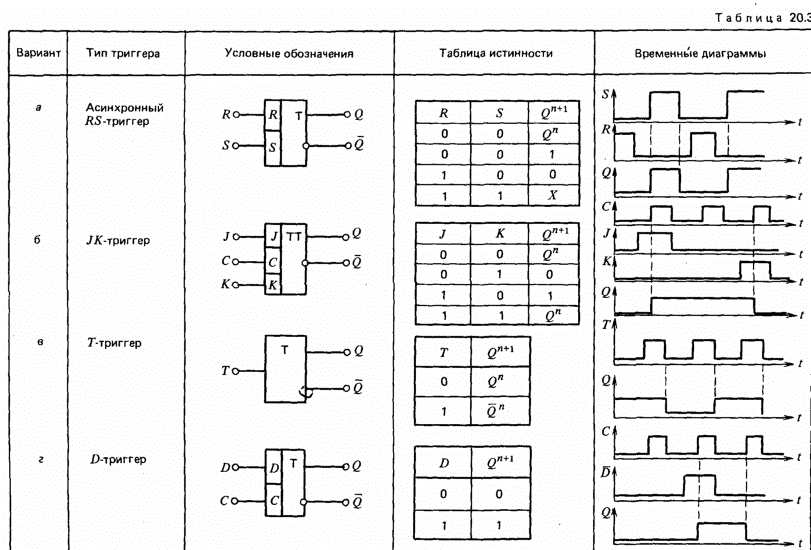
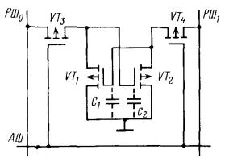
Рисунок 3.8
Квазистатические триггеры в отличие от динамических не требуют так называемого «тактового питания» в период хранения информации. При записи информации тактовое питание необходимо, оно осуществляется тактовыми импульсами, имеющими длительность, меньшую, чем постоянная времени заряда и разряда паразитных емкостей затворов МДП транзисторов схемы. По сравнению со схемами статического типа квазистатические и динамические схемы триггеров позволяют в 2—3 раза уменьшить число используемых МДП транзисторов.
В динамических триггерах по истечении времени хранения информация теряется. Для сохранения информации необходимо ее периодическое восстановление путем подачи последовательности внешних импульсов, период которых Т меньше времени хранения информации t. Эти импульсы одновременно выполняют функции синхронизации. В зависимости от числа последовательностей синхроимпульсов различают двух- и четырехфазные динамические элементы.
Характерной особенностью цифровых устройств на основе динамических триггеров является то, что синхронизация в них осуществляется путем подключения и отключения соответствующих элементов к цепи питания. При этом элементы потребляют мощность от источника питания не постоянно, а периодически в течение относительно коротких промежутков времени, когда производится переключение элементов или восстановление информации. В результате устройства на динамических элементах при низких частотах переключения потребляют существенно меньшую мощность, чем на основе статических триггеров. Поэтому динамические триггеры являются весьма перспективными элементами для БИС памяти. Рассмотрим принцип действия динамического триггера, пригодного для использования в качестве ячейки памяти БИС.
На рис. 3.8 изображена схема динамического триггера на основе двух инверторов VT1, VT3 и VT2, VТ4, с взаимными перекрестными связями. В триггере используются МДП транзисторы с каналом р-типа. Питание и синхронизация работы триггера производятся импульсными последовательностями, подаваемыми в разрядные шины РШ0 и РШ1 (в них потенциалы могут принимать значения –Un, 0 B). Хранение информации обеспечивается паразитными емкостями МДП транзисторов, для удобства обозначенными С1 и С2.
Для записи на адресную шину подают напряжение –Un, а на разрядные шины РШ1 и РШ0 подают уровни –Un и 0. Уровень –Un через ключ VT4 поступает на вход транзистора VT1 и открывает его. На затвор транзистора VT2 поступает уровень 0, и, следовательно, он закрывается. Напряжение на емкости С1 принимает значение uC1 = –Un, а на емкости С2 равно нулю (иC1=0). После записи отключают напряжение на адресной шине.
Так как остаточный ток закрытого транзистора VT1 мал, то емкость С1 будет сохраняться на выходах ячейки (на стоках VT1 и VT2) длительное время За это время можно несколько раз считывать информацию ячейки (следует учитывать что при считывании приходится открывать транзистор VT4 и разряд С1 ускоряется). Для того чтобы поддерживать напряжение на емкости С1, несмотря на неизбежный ее разряд, осуществляют регенерацию: периодическую запись того же кода.
Динамические триггеры на МДП транзисторах экономичнее и компактнее триггеров на биполярных транзисторах, но уступают им по быстродействию.